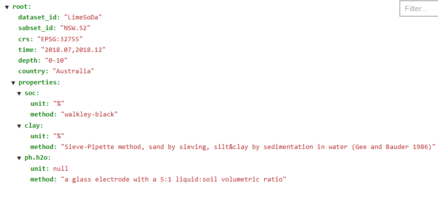
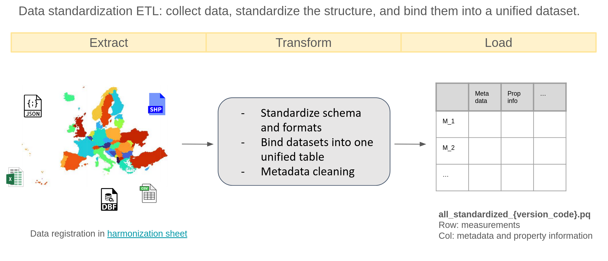
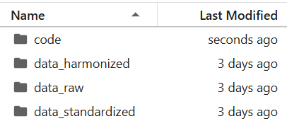
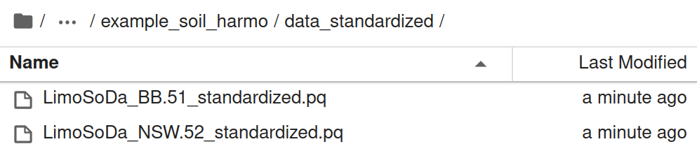
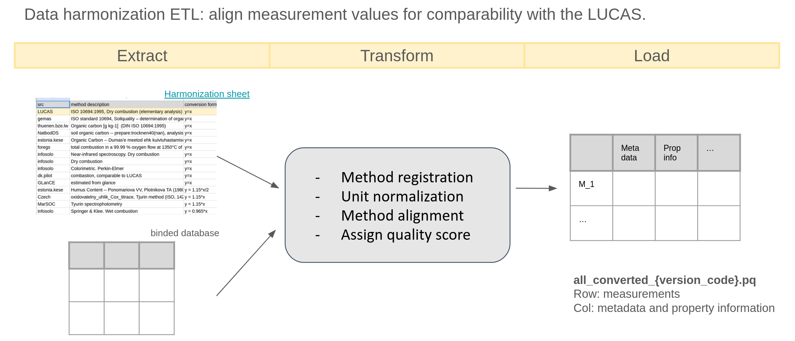
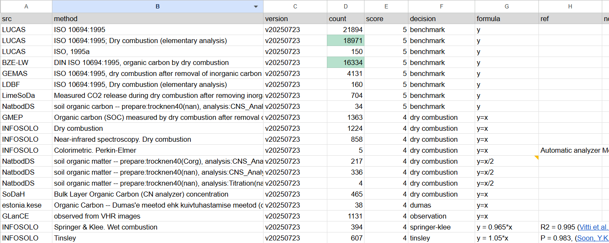
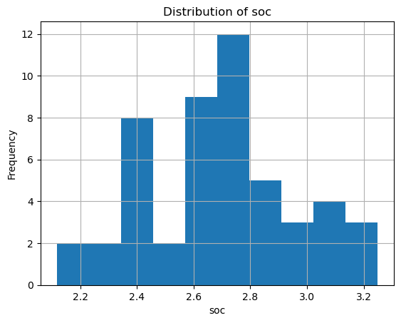
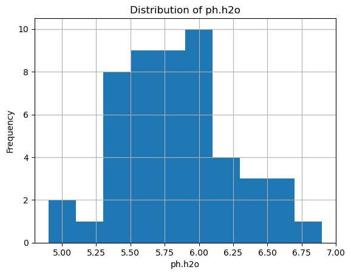
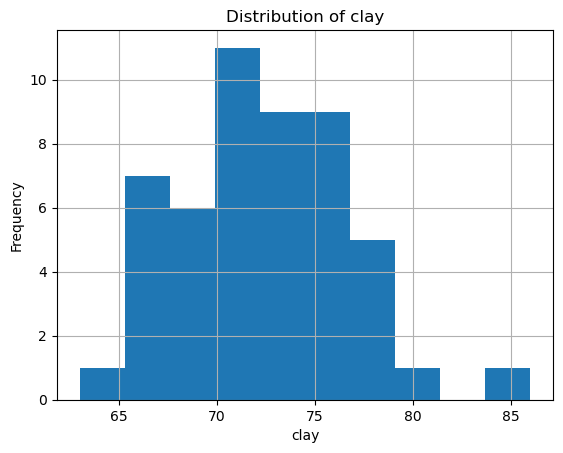

We use LimoSoDa, a collection of open-source farm-level soil datasets, as an example to demonstrate how our soil data harmonization workflow operates, including both standardization and harmonization steps.
In this example, we work with two LimoSoDa subsets:
NSW.52 (Australia)
SC.50 (Brazil)
This covers three soil properties: - Soil Organic Carbon (soc) - pH measured in water (ph.h2o) - Clay content (mass percentage of particles < 2 µm)
Standardization
This step collects, standardizes, and unifies soil datasets from multiple formats (JSON, SHP, Excel, CSV, DBF).
For each data source, a notebook named {dataset_id}_standardize.ipynb performs the full standardization pipeline.
Metadata required for the later harmonization step is manually added in {dataset_id}_{subset_id}_meta.json.
Extracting Metadata into a Standard JSON File
Soil property metadata often appears in inconsistent formats and may contain varying levels of detail.
To standardize and automate the workflow, we define a set of metadata fields of interest and manually extract them into a JSON file. These metadata is required for downstream harmonization steps, including:
Field
Description
dataset_id
Project or data source name (e.g., LUCAS).
subset_id
Subset of the dataset (e.g., LUCAS 2009).
site_id
Identifier for individual measurements within the dataset.
country
Country where the data was collected.
lat / lon
Sample location coordinates (WGS84).
time
Sampling time.
hzn_dep / hzn_top & hzn_btm
Reported soil horizon depth (single value or top/bottom).
lc_survey
Land cover information collected along with soil samples.
Apart from the general ones above, there are also metadata for soil property measurements — specifically units and measurement methods — can appear in two forms:
1. Uniform Property Metadata (most common): The entire dataset subset shares the same units and same measurement method, such as LUCAS, LimeSoDa. In this case, unit and method information is recorded once in the JSON metadata file. The processing script can then automatically apply this shared information. For SOC, an additional metadata field - som? - is needed to indicate whether SOC is reported as SOM. If so, a simple scaling factor is applied to convert SOM to SOC.
2. Row-Specific Property Metadata: For some datasets, each row has its own unit, method, or measurement specification. The JSON fields for unit/method are set to null. Additional manual processing is required during standardization to extract row-level metadata.
In the end, we will get a json file like this:

Example json file “LimoSoDa_NSW.52_meta.json”
The standardization ETL

ETL Process
Once the metadata JSON file is prepared, we can start the standardization ETL process using code. In the following, we walk through each step of this process.
To start, we import the required packages and define the relevant file paths. To keep the project portable, all file references use relative paths rather than absolute paths. This ensures the code runs correctly regardless of where the project folder is located.
We organize our project so that code and data live in separate directories:

Directory structure
Code
import os # for file parsingimport pandas as pd # for data frame processingimport numpy as np # for numerical calculationimport json # for meta data extractionfrom pyproj import Transformer # for coordinates standardizationparent_path ='example_data'# directory path of your dataraw_folder =f'{parent_path}/data_raw/LimeSoDa/data'# folder with raw datastandard_folder =f'{parent_path}/data_standardized'# folder that store standardized data
Standardize the LimeSoDa subset NSW.52 so that it follows a consistent format and includes all required metadata columns.
Define version, dataset_id, and subset_ids to keep your input and output paths well-organized and structured.
These identifiers allow you to systematically build directory paths and manage data across different stages of processing. Using these paths, the metadata JSON, the main datasets, and the coordinate datasets are loaded.
Code
version ='v20250723'# version id, can be anything, here we use date stringdataset_id ="LimoSoDa"# dataset idsubset_id ="NSW.52"# id for 1st subset in this demonstration# load in the datasets and coordinatesdata = pd.read_csv(f'{raw_folder}/{subset_id}/{subset_id}_dataset.csv')coordinate = pd.read_csv(f'{raw_folder}/{subset_id}/{subset_id}_coordinates.csv')df = pd.concat([data, coordinate], axis=1).copy() # join the coordinates and datasetori_len =len(df) # original measurement numberprint("the raw data looks like\n", df.head(3))withopen(f'{raw_folder}/{subset_id}/{dataset_id}_{subset_id}_meta.json', 'r') as f: meta = json.load(f) crs = meta.get("crs")print("\nthe meta data looks like\n",meta)
the raw data looks like
SOC_target pH_target Clay_target Altitude Slope B02 B8A B11 \
0 1.00 6.70 55.771 243.794998 0.026625 1472 2262 2857
1 0.85 8.58 55.538 247.552994 0.019499 1585 2453 3149
2 0.75 8.75 58.212 241.613998 0.042002 1484 2150 2629
x_32755 y_32755
0 774457.5725 6648441.945
1 775237.4110 6648541.716
2 774267.5263 6648114.752
the meta data looks like
{'dataset_id': 'LimeSoDa', 'subset_id': 'NSW.52', 'crs': 'EPSG:32755', 'time': '2018.07,2018.12', 'depth': '0-10', 'country': 'Australia', 'properties': {'soc': {'unit': '%', 'method': 'walkley-black'}, 'clay': {'unit': '%', 'method': 'Sieve-Pipette method, sand by sieving, silt&clay by sedimentation in water (Gee and Bauder 1986)'}, 'ph.h2o': {'unit': None, 'method': 'a glass electrode with a 5:1 liquid:soil volumetric ratio'}}}
Observations from the Raw Data
From the initial inspection, the dataset requires several standardization steps:
Column names must follow the agreed naming convention (e.g., use soc instead of SOC_target).
Coordinate fields are stored in a local projection (e.g., x_32775) instead of geographic coordinates (latitude, longitude).
Some essential metadata is missing (e.g., dataset_id, depth, etc.).
Some fields are irrelevant and should be removed (e.g., Altitude).
To address these issues, we will standardize each component step by step. Many tasks can be automated using functions from standardize_helpers, while others require manual adjustments depending on the dataset.
Before applying helper functions, the following tasks must be handled manually:
Determine pH Measurement Method
Check the metadata to verify whether pH was measured in water or CaCl₂, as this affects how the values should be interpreted and standardized.
Rename Property Columns
Update property-related column names to follow the standardized schema.
Identify and Convert Coordinate Columns
Detect the coordinate columns provided in local projection and convert them into the required geographic coordinate system.
Code
# rename the columns to be standarddf = df.rename(columns={'SOC_target':'soc', 'Clay_target':'clay', 'pH_target':'ph'})# pHif"ph"in df.columns:if"ph.h2o"in meta.get("properties", {}): df.rename(columns={"ph": "ph.h2o"}, inplace=True)elif"ph.cacl2"in meta.get("properties", {}): df.rename(columns={"ph": "ph.cacl2"}, inplace=True) # coordinates conversion: lat and lonx_cols = [c for c in df.columns if c.startswith("x_")]y_cols = [c for c in df.columns if c.startswith("y_")]if x_cols and y_cols: x_col, y_col = x_cols[0], y_cols[0]if crs and crs.lower() !="epsg:4326": transformer = Transformer.from_crs(crs, "EPSG:4326", always_xy=True) df["lon"], df["lat"] = transformer.transform(df[x_col].values, df[y_col].values)elif crs: df.rename(columns={x_col: "lon", y_col: "lat"}, inplace=True)else: df["lat"] = np.nan df["lon"] = np.nanelse: df["lat"] = np.nan df["lon"] = np.nan print("now the data contains columns\n", df.columns.values)
now the data contains columns
['soc' 'ph.h2o' 'clay' 'Altitude' 'Slope' 'B02' 'B8A' 'B11' 'x_32755'
'y_32755' 'lon' 'lat']
By applying the attach_metadata(df, meta) function, metadata is extracted from the metadata JSON and appended to the dataframe. Specifically, this function performs the following tasks:
Add general metadata such as dataset_id, subset_id, time, country, depth, and lc_survey, as well as property-level metadata (e.g., units and measurement methods) directly to the dataframe, provided these values are available in the metadata file.
In our case, most of these fields are present in the metadata.
Add an additional column soc_som, based on the som? parameter in the metadata, indicating whether SOC values were originally reported as SOM and therefore require conversion using a simple scaling factor.
Handle missing or non-uniform metadata.
If a field is not included in the metadata, it means either (a) it is missing entirely, or (b) it varies within the dataset and must be added manually.
For this dataset, all required metadata are available except lc_survey, which remains unknown.
After attaching metadata, irrelevant columns are removed to keep the dataset clean and consistent using the standardize_column_types(df) function.
These steps are commonly needed for most datasets, which is why they have been implemented as helper functions—to reduce repetitive manual work.
Code
from standardize_helper import attach_metadata, standardize_column_types # helpers tailored# attach meta data from meta.json to the df# could also pass the path to meta.json heredf = attach_metadata(df, meta) print("now the data contains columns\n", df.columns.values)print()df, mismatch = standardize_column_types(df)print("now the data contains columns\n", df.columns.values)
now the data contains columns
['soc' 'ph.h2o' 'clay' 'Altitude' 'Slope' 'B02' 'B8A' 'B11' 'x_32755'
'y_32755' 'lon' 'lat' 'dataset_id' 'subset_id' 'time' 'country' 'depth'
'hzn_dep' 'hzn_top' 'hzn_btm' 'soc_unit' 'soc_method' 'clay_unit'
'clay_method' 'ph.h2o_method']
Missing meta column: site_id, double check if you could add it...
Missing meta column: lc_survey, double check if you could add it...
Dropping unexpected columns: ['Altitude', 'B02', 'B11', 'B8A', 'Slope', 'depth', 'x_32755', 'y_32755']
now the data contains columns
['soc' 'ph.h2o' 'clay' 'lon' 'lat' 'dataset_id' 'subset_id' 'time'
'country' 'hzn_dep' 'hzn_top' 'hzn_btm' 'soc_unit' 'soc_method'
'clay_unit' 'clay_method' 'ph.h2o_method']
Once the data is standardized, we save the processed dataset.
Up to this point, no measurements (rows) have been removed, regardless of their quality.
All filtering or quality-control steps will be handled later in the workflow.
Code
now_len =len(df)print(f"{ori_len-now_len} measurements missing during the standardization process.")df.to_parquet(standard_folder+f"/{dataset_id}_{subset_id}_standardized_{version}.pq")
0 measurements missing during the standardization process.
Now we repeat the process for another subset: BB.51.
Code
subset_id ="SC.50"# id for 1st subset in this demonstration# load in the datasets and coordinatesdata = pd.read_csv(f'{raw_folder}/{subset_id}/{subset_id}_dataset.csv')coordinate = pd.read_csv(f'{raw_folder}/{subset_id}/{subset_id}_coordinates.csv')df = pd.concat([data, coordinate], axis=1).copy() # join the coordinates and datasetori_len =len(df) # original measurement numberprint("the raw data looks like\n", df.head(3))withopen(f'{raw_folder}/{subset_id}/{dataset_id}_{subset_id}_meta.json', 'r') as f: meta = json.load(f) crs = meta.get("crs")print("\nthe meta data looks like\n",meta)print()# rename the columns to be standarddf = df.rename(columns={'SOC_target':'soc', 'Clay_target':'clay', 'pH_target':'ph'})# pHif"ph"in df.columns:if"ph.h2o"in meta.get("properties", {}): df.rename(columns={"ph": "ph.h2o"}, inplace=True)elif"ph.cacl2"in meta.get("properties", {}): df.rename(columns={"ph": "ph.cacl2"}, inplace=True) # coordinates conversion: lat and lonx_cols = [c for c in df.columns if c.startswith("x_")]y_cols = [c for c in df.columns if c.startswith("y_")]if x_cols and y_cols: x_col, y_col = x_cols[0], y_cols[0]if crs and crs.lower() !="epsg:4326": transformer = Transformer.from_crs(crs, "EPSG:4326", always_xy=True) df["lon"], df["lat"] = transformer.transform(df[x_col].values, df[y_col].values)elif crs: df.rename(columns={x_col: "lon", y_col: "lat"}, inplace=True)else: df["lat"] = np.nan df["lon"] = np.nanelse: df["lat"] = np.nan df["lon"] = np.nan print("now the data contains columns\n", df.columns.values)print()# attach meta data from meta.json to the df# could also pass the path to meta.json heredf = attach_metadata(df, meta) print("now the data contains columns\n", df.columns.values)print()df, mismatch = standardize_column_types(df)print("now the data contains columns\n", df.columns.values)df.to_parquet(standard_folder+f"/{dataset_id}_{subset_id}_standardized_{version}.pq")
the raw data looks like
SOC_target pH_target Clay_target Altitude Slope ERa \
0 2.209 5.8 68 1024.848022 2.736778 37.537538
1 2.267 5.9 68 1025.331909 2.266586 35.001750
2 2.093 5.6 66 1027.451660 1.142883 66.006601
x_32722 y_32722
0 542488.019 6975548.675
1 542487.752 6975499.938
2 542451.559 6975474.032
the meta data looks like
{'dataset_id': 'LimeSoDa', 'subset_id': 'SC.50', 'time': '2013.11', 'country': 'Brazil', 'crs': 'EPSG:32722', 'depth': '0-20', 'properties': {'soc': {'unit': '%', 'method': 'walkley-black', 'som?': 0}, 'clay': {'unit': '%', 'method': 'Sieve-Pipette method, sand by sieving, silt&clay by sedimentation in water, German adaptation (DIN ISO 11277)'}, 'ph.h2o': {'unit': None, 'method': 'a glass electrode with a 5:1 liquid:soil volumetric ratio'}}}
now the data contains columns
['soc' 'ph.h2o' 'clay' 'Altitude' 'Slope' 'ERa' 'x_32722' 'y_32722' 'lon'
'lat']
now the data contains columns
['soc' 'ph.h2o' 'clay' 'Altitude' 'Slope' 'ERa' 'x_32722' 'y_32722' 'lon'
'lat' 'dataset_id' 'subset_id' 'time' 'country' 'depth' 'hzn_dep'
'hzn_top' 'hzn_btm' 'soc_unit' 'soc_method' 'clay_unit' 'clay_method'
'ph.h2o_method']
Missing meta column: site_id, double check if you could add it...
Missing meta column: lc_survey, double check if you could add it...
Dropping unexpected columns: ['Altitude', 'ERa', 'Slope', 'depth', 'x_32722', 'y_32722']
now the data contains columns
['soc' 'ph.h2o' 'clay' 'lon' 'lat' 'dataset_id' 'subset_id' 'time'
'country' 'hzn_dep' 'hzn_top' 'hzn_btm' 'soc_unit' 'soc_method'
'clay_unit' 'clay_method' 'ph.h2o_method']
Combine standardized datasets
Now we have all the example datasets standardized and put in directory data_standardized as shown in

Standardized datasets
Next we combine them together, and clean based on meta data.
Code
data = []for filename in os.listdir(standard_folder):if filename.endswith(f"_standardized_{version}.pq"): filepath = os.path.join(standard_folder, filename)print(f"Adding: {filepath}") dt = pd.read_parquet(filepath) data.append(dt)print(dt.shape)print('------------')df_standardized = pd.concat(data)print('standardized data shape', df_standardized.shape)print("missing data check\n%, records, meta")for ii in ["dataset_id", "subset_id", "time", "site_id", "country", "lat", "lon", "lc_survey","hzn_top","hzn_btm"]:if ii in df_standardized.columns:print(round(df_standardized[ii].isna().sum()*100/len(df_standardized),1), df_standardized[ii].isna().sum(), ii)
We now clean the data based on metadata: records lacking valid depth, year, or coordinate information are removed. Then we save the data.
We also standardize: - Depth into a single column, hzn_dep. If hzn_dep is missing, it is computed as the mean of hzn_top and hzn_btm. - Year information, extracted and standardized from the original time column (since current covariate layers support year-level resolution).
Code
# calculate hzn_depmask = df_standardized['hzn_dep'].isna()df_standardized.loc[mask, 'hzn_dep'] = df_standardized.loc[mask, ['hzn_top', 'hzn_btm']].mean(axis=1)# check depth information validityna = df_standardized.loc[df_standardized['hzn_dep'].isna()]df_standardized = df_standardized.loc[df_standardized['hzn_dep'].notna()].reset_index(drop=True)print(f'{len(na)} data with no depth info, from ', na['dataset_id'].unique())df_standardized = df_standardized.drop(columns=['hzn_top','hzn_btm'])# timena = df_standardized.loc[df_standardized['time'].isna()]df_standardized = df_standardized.loc[df_standardized['time'].notna()].reset_index(drop=True)print(f'{len(na)} data with no time info, from ', na['dataset_id'].unique())# extract yearfrom standardize_helper import extract_yeardf_standardized["year"] = df_standardized["time"].map(extract_year)na = df_standardized.loc[df_standardized['year'].isna()]df_standardized = df_standardized.loc[df_standardized['year'].notna()].reset_index(drop=True)print(f'{len(na)} data with no valid year info, from ', na['dataset_id'].unique())df_standardized = df_standardized.drop(columns=['time'])# coordinatesna = df_standardized.loc[df_standardized['lat'].isna() | df_standardized['lon'].isna()]df_standardized = df_standardized.loc[df_standardized['lat'].notna() | df_standardized['lon'].notna()].reset_index(drop=True)print(f'{len(na)} data with nan coordinate info, from ', na['dataset_id'].unique())mask_inf = np.isinf(df_standardized["lat"]) | np.isinf(df_standardized["lon"])na = df_standardized.loc[mask_inf]df_standardized = df_standardized.loc[~mask_inf].reset_index(drop=True)print(f'{len(na)} data with inf coordinate info, from ', na['dataset_id'].unique())print(df_standardized.shape)df_standardized.to_parquet(f'{standard_folder}/all_standardized_{version}.pq')
0 data with no depth info, from []
1219348 data with no time info, from ['LimeSoDa' 'BHR-P' 'BIS' 'GLanCE' 'Geocradle' 'INFOSOLO' 'LUCAS' 'MarSOC'
'SoDaH']
52 data with no valid year info, from ['LimeSoDa']
0 data with nan coordinate info, from []
0 data with inf coordinate info, from []
(50, 59)
Harmonization ETL
This step aligns measurement values across datasets so they are comparable with the LUCAS reference methods.
It uses the standardized dataset all_standardized_{version_code}.pq as input and harmonizes property values by accounting for both method and unit differences.

ETL process for harmonization
Method harmonization ensures that property values measured using different protocols become comparable. This process relies on the shared harmonization sheet. This goes through steps:
For each combination of dataset_id and {prop}_method, register any unknown methods in the harmonization sheet using the register_method function from harmonization_helpers.py.
---------------------soc-----------------------
No new methods to register.
---------------------ph.h2o-----------------------
No new methods to register.
---------------------clay-----------------------
No new methods to register.
Once a method is registered in the harmonization sheet, it appears in the corresponding tab with the columns src, method, version, and count automatically populated.
The remaining columns are then completed manually based on available documentation, completeness, and domain knowledge.
These entries—especially the formula column—define how the conversion(harmonized_df, tab_df, prop=prop) function transforms the property values.
The conversion(...) function also removes low-quality entries (e.g., records lacking any documentation of the measurement method).

Example of harmonization sheet
Code
from harmonization_helper import conversionharmonized_df = df_standardized.copy()import numpy as npfor prop in ['soc','ph.h2o','clay']:print(f'---------------------{prop}-----------------------') tab = sheet.worksheet(prop.replace('.','_')) tabt_values = tab.get_all_values() tab_df = pd.DataFrame(tabt_values[1:], columns=tabt_values[0]) harmonized_df = conversion(harmonized_df, tab_df, prop=prop)print(harmonized_df.shape)
---------------------soc-----------------------
All methods for soc are in registry.
(50, 58)
---------------------ph.h2o-----------------------
All methods for ph.h2o are in registry.
(50, 57)
---------------------clay-----------------------
All methods for clay are in registry.
(50, 56)
After this, each property one by one should be examined, to normalize units across datasets. specifically, we do: - Checking unit metadata
- Inspecting value distributions when needed
- Removing unrealistic values (extreme outliers, negative values where invalid, etc.)
Code
import matplotlib.pyplot as pltfor prop in ['soc', 'ph.h2o', 'clay']: unit =f"{prop}_unit"if unit in harmonized_df.columns:print(unit, harmonized_df[unit].unique()) plt.figure() # create a new figure for each property harmonized_df[prop].hist() plt.title(f'Distribution of {prop}') plt.xlabel(prop) plt.ylabel('Frequency') plt.show()
soc_unit ['%']

ph.h2o_unit [None]

clay_unit ['%']

In our case, each property is recorded using a single unit, and the distributions show no unrealistic values.
Therefore, no additional processing is required. We remove all unit and method columns and save the final harmonized dataset as all_harmonized_{version_code}.pq, which includes: - Metadata
- Property information
- Harmonized values
This dataset is ready for spatial overlay and modeling.